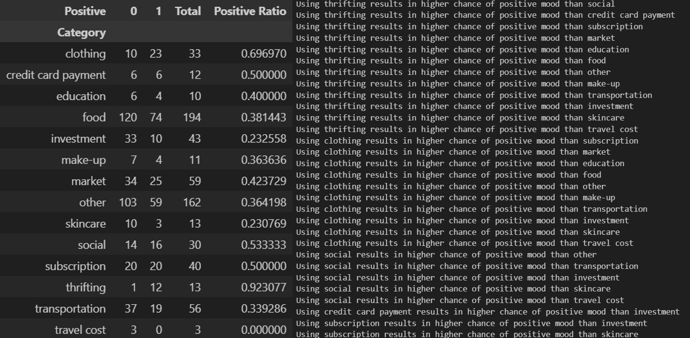
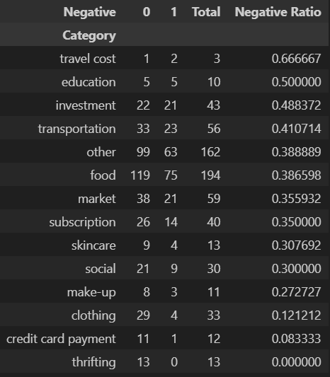
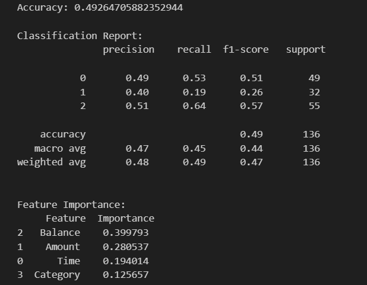
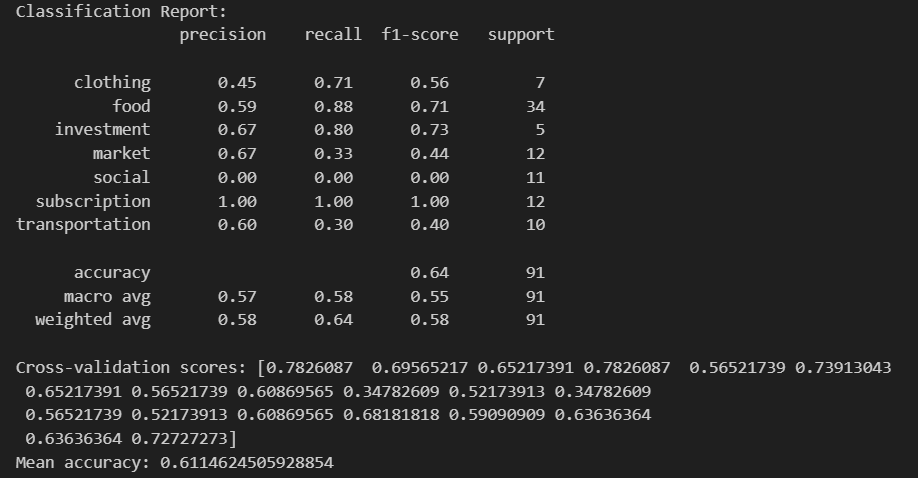

By Sude Tıraş
This is my project for Sabanci University's DSA210 Introduction to Data Science course Fall 2024-2025.
I analysed two datasets: my transaction history and daily emotional state log. With this project, I aim to understand my spending patterns and explore emotional correlations.
This plot helps track my daily spending trends and identify outliers or unusual patterns over time.
The highest spending occurred in July 2024, possibly due to the payment for the summer school which is not a routine purchase or an anormal situation. Meanwhile, the lowest spending days align with periods of little or no financial activity. Cluster of points on the bottom show consistent low-spending habits.
This graph provides an overview of abnormal spending trends across weeks and months.
Red and blue dots represent out-of-usual spendings.
This graph displays spending patterns across different hours of the day.
Transaction amount peaks at 10 am but as we can see averege spending is lower compared to other hours. I think this is likely because I make most of my coffe purchases around this hour, these are frequent but not costly.
This plot shows the distribution of my spending across various categories. By breaking spending into categories, I can better understand where my money goes, such as food, clothing, or entertainment.
It seems that I invest half of my money. I initially added skincare and make-up categories because I thought I was spending too much on these categories but they cover only a small proportion.
This graph reveals my spending behavior by category across different hours of the day.
For example, food purchases often occur during meal times, while clothing purchases happen late at night, indicating possible impulse shopping.
The plot below shows monthly trends by categories. You can use dropdown menu to see the details about certain categories.
Clothing: The sharp spikes in spending, particularly around July 2024, might correspond to seasonal shopping or sales events. Categories like subscriptions and transportation have relatively stable spending trends over time, indicating recurring costs. Some categories, such as make-up and skincare, show low spending overall, with occasional increases, likely tied to specific events or bulk purchases. Consistently low categories, such as thrifting, may indicate less priority or limited activity in those areas.
This chart illustrates the frequency of different emotional states recorded over time.
The neutral emotional state is the most common, indicating a predominant sense of balance or lack of strong emotional fluctuations in the dataset.
This line chart tracks changes in emotional states over time, from strongly negative to strongly positive.
The rapid transitions indicate that my emotional state is highly dynamic, which makes me wonder how external factors, such as events or daily routines, might be influencing these changes.
Firstly, I wanted to see if there is any relationship between my balance and the amounts of spendings.
From the graph, there doesn’t seem to be a strong correlation between account balance and transaction amount. Most transactions cluster around lower balances and smaller amounts, indicating routine spending. Larger transactions are spread across a range of account balance.
This graph provides an overview of proportion of spending categories related to emotinal states.
The intensity of the color indicates the prevalence of each emotional state within a category.
Strong positive and positive emotions are highly associated with thrifting, suggesting these transactions make me happy. Negative and strong negative emotions are significantly linked to travel cost.
I tested if certain category purchases affect positive mood or affected by positive mood better than others.
I found out that thrifting, clothing and social are related to positive mood more than the other categories.
I did the same test for negative mood.
But p values were larger than 0.05 so failed to reject the null hypothesis.
Here is a network of positie ratios.
I developed a ML model to classify datapoints as Negative, Neutral or Positive.
Model had a 49 percent accuracy which is better than random guessing but results were still not satisfactory for me, model particularly struggled with neutral state.
Then I developed another ML model to classify spending categories. I did not include categories that has lesser amount of data points.
The model performs well for categories like investment and subscription, where patterns are likely more distinct or less prone to overlap with other categories. Categories like social and transportation show poor performance, with social being completely unclassified. Cross-validation scores range from 0.34 to 0.78, indicating variability in model performance depending on the training/validation split. This suggests sensitivity to the data distribution.